High Valley Theatre
The High Valley Theatre and Ojai Players, 1942–51
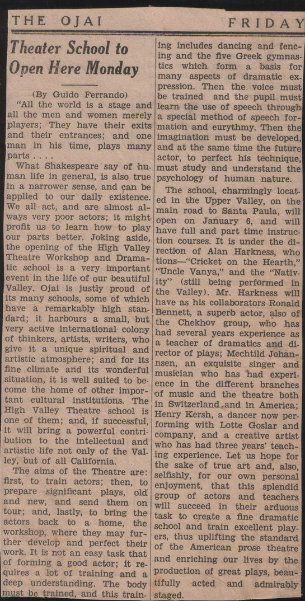
Opening of school Read the clipping text (OCR)
THE OJAI FRIDAY Theater School to Open Here Monday (By Guido Ferrando) "All the world is a stage and all the men and women merely players; They have their exits and their entrances; and one man in his time, plays many parts . . .. What Shakespeare say of hu. man life in general, is also true in a narrower sense, and can be applied to our daily existence. We all act, and are almost always very poor actors; it might profit us to learn how to play our parts better. Joking aside, the opening of the High Valley Theatre Workshop and Dramatic school is a very important event in the life of our beautiful Valley. Ojai is justly proud of its many schools, some of which have a remarkably high stan. dard; it harbours a small, but very active international colony of thinkers, artists, writers, who give it a unique spiritual and artistic atmosphere; and for its fine climate and its wonderful situation, it is well suited to be. come the home of other important cultural institutions. The High Valley Theatre school is one of them; and, if successful, it will bring a powerful contri. bution to the intellectual and artistic life not only of the Val. ley, but of all California. The aims of the Theatre are: first, to train actors; then, to prepare significant plays, old and new, and send them on tour; and, lastly, to bring the actors back to a home, the workshop, where they may further develop and perfect their work. It is not an easy task that of forming a good actor; it requires a lot of training and a deep understanding. The body must be trained, and this train-ing includes dancing and fencing and the flve Greek gymnas. tics which form a basis for many aspects of dramatic ex. pression. Then the voice must be trained and the pupil must learn the use of speech through a special method of speech formation and eurythmy. Then the imagination must be developed, and at the same time the future actor, to perfect his technique, must study and understand the psychology of human nature. The school, charmingly locat. ed in the Upper Valley, on the main road to Santa Paula, will open on January 6, and will have full and part time instruc tion courses. It is under the direction of Alan Harkness, who tions "Cricket on the Hearth," "Uncle Vanya," and the "Nativ. ity" (still being performed in the Valley). Mr. Harkness will have as his collaborators Ronald Bennett, a superb actor, also of the Chekhov group, who has had several years experience as a teacher of dramatics and di. rector of plays; Mechtild Johan-nsen, an exquisite singer and musician who has had experi. ence in the different branches of music and the theatre both in Switzerland and in America; Henry Kersh, a dancer now per forming with Lotte Goslar and company, and a creative artist who has had three years' teaching experience. Let us hope for the sake of true art and, also, selfishly, for our own personal enjoyment, that this splendid group of actors and teachers will succeed in their arduous task to create a fine dramatic school and train excellent play. ers, thus uplifting the standard of the American prose theatre and enriching our lives by the production of great plays, beautifully acted and admirably staged.
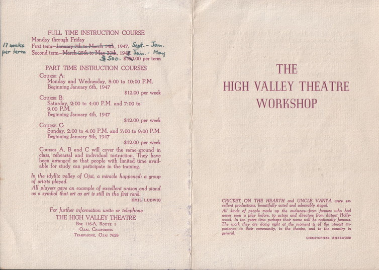
Brochure for High Valley Theatre School Read the clipping text (OCR)
FULL TIME INSTRUCTION COURSE Monday through Friday 17 weeks Pat tom-terman sal la Manet int, 1917, Sept. - Jon. per term PART TIME INSTRUCTION COURSES COURSE A: Monday and Wednesday. 8:00 to 10:00 P.M. Beginning January 6th, 1947 $12.00 per week COuRsE B: SaturdaM, 2-00 to 1:00 P.M. and 7:00 to Beginning January 4th, 1947 $12.00 per weck COURse. C: Sunday. 2:00 to 4:00 P.M. and 7:00 to 9:00 P.M. Beginning January 5th, 1947 $12.00 per week Courses A. B and C will cover the same ground in class, rehcarsal and individual instruction, They have been arranged so that people with limited time avail. able for study can participate in the tratning. In the idyllic valley of Olat, a miracle happened: a group of artists played. All players gave an example of excellent unison and stand as a symbol that art as art is still in the first rank. EMILLUDWIG For Jurther information write or telephone THE HIGH VALLEY THEATRE Box 116-A, Rourt 1 OJAL CALIFORNIA TELEPHONE. ON 7629 THE HIGH VALLEY THEATRE WORKSHOP CRICKET ON THE HEARTH and UNCLE VANYA were cellent productions, besutifully octed odmirably stoped, All kinds of people made up the audunce-from, formers who had nose, men a glen bolere, is peters and direct her does thalls. in swars time perhaps thel name wil be nalionally amous The work they are doing right at the moment is of the utmost ins portance to airy prominentarol
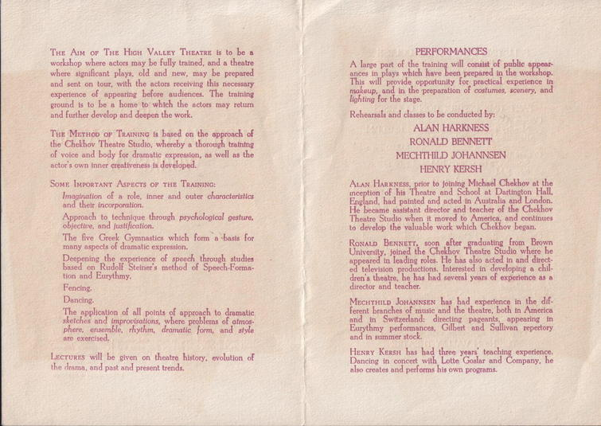
High Valley Theatre – brochure Read the clipping text (OCR)
and further develop and deepen the work. The MetHoD or TraiNiNg is based on the approach of the Chekhov Theatre Studio, whereby a thorough training of voice and body for dramatic expression, as well as the actor's own inner creativeness is developed. SOME IMPORTANT ASPECTS OF THE TRAINING: Imagination of a role. Inner and outer characteristics and their incorporation. Appranch to technique through psychological gesture, objective, and justification. The five Greek Gymnastics which form a basis for many aspects of dramatic expression. Deepening the experience of speech through atudies based on Rudolf Stelner's method of lion and Eurythmy. Fencing. Dancing. The Application of all polnts of approach to dramatic sketches and improvisations, where problems of atmos- phere, ensemble, rhythm, dramatic are exercised. Lacrukrs will be given on theatro history. evolation of the drama, and past and present trends. PERFORMANCES A lange part of the training will consist of public oppear- ances in plays which have been prepared in the workshop. This will provide opportunity for practical experience in taleung, and la die proponation of cadlumes, soners, and Rehearsals and classes to be conducted by: ALAN HARKNESS RONALD BENNETT MECHTHILD JOHANNSEN HENRY KERSH London. soon ofter gradunting from Brown Thentro Studio where he he has had several years of experienco as a director and teacher. MEcHTHILD JoMANNseN has had experience in the dif ferent branches of muse and the theatre, both in Ametica and in Switzerland: directing pageants, appeoring in Earthmy petformances, Gilbert and Sully and in summer stock. Henry KeRsH has had three years, teaching experience. Dancing in concert with Lotte Goslar and Company, he also creates and performs his own programs.
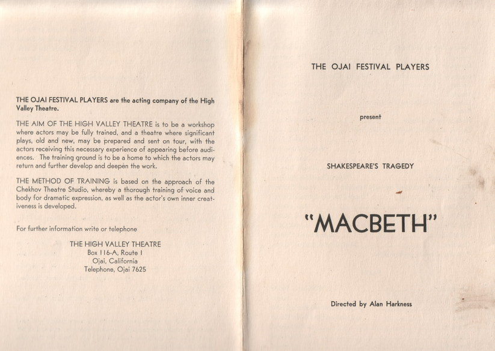
Program for Macbeth Read the clipping text (OCR)
THE OJAI FESTIVAL PLAYERS are the acting company of the High Valley Theatre. THE AIM OF THE HIGH VALLEY THEATRE is to be a workshop where actors may be fully trained, and a theatre where significant plays. old and now, may be prepared and sont on four, with the actors receiving this necessary experience of appearing before audi. ences. The training ground is to be a home to which the actors may return and further develop and deepen the work. THE METHOD OF TRAINING is based on the approach of the Chekhov Theatre Studio, whereby a thorough training of voice and body for dramatic expression, as well as the actor's own inner creat. iveness is developed. For further information write or telephone THE HIGH VALLEY THEATRE Box 116-A, Route I Ojai, California Telephone, Ojai 7625 THE OJAI FESTIVAL PLAYERS present SHAKESPEARE'S TRAGEDY "MACBETH" Directed by Alan Harkness
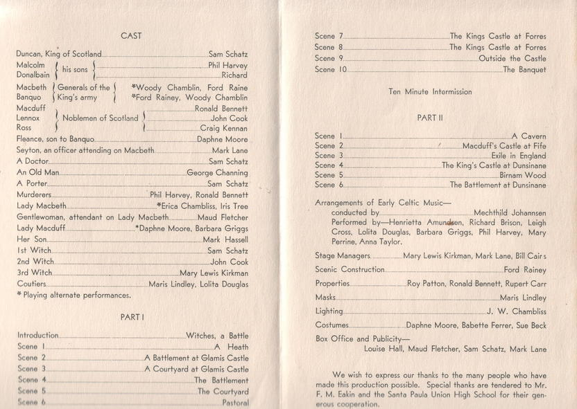
Cast list for Macbeth Read the clipping text (OCR)
CAST Duncan, King of Scotland. Sam Schatz Malcolm his sons Phil Harvey Donalbain Richard Macbeth Generals of the *Woody Chamblin, Ford Raine Banauo [King's army *Ford Rainey. Woody Chamblin Macduff Lennox ] Noblemen of Scolland/ Ronald Bennett John Cook Ross Craig Kennan Fleance, son to Banquo. Daphne Moore Seyton, an officer attending on Macbeth Mark Lane A Doctor. Sam Schatz An Old Man. George Channing A Porter. Som Schatz Murderers. „Phil Harvey. Ronald Bennett Lady Macbeth _M Erica Chambliss. Iris Tree Gentlewoman, attendant on Lady Macbeth Maud Flotcher Lady Macduff. *Dophno Moore, Barbora Griggs Her Son. Mark Hossoll Ist Witch Sam Schatz 2nd Witch. John Cook 3rd Witch. ..Mary Lewis Kirkman Coutiors Maris Lindley. Lolita Douglas * Playing alternate performances. PART I Introduction Scone Scono 2 Scone 3 Scene Scone Scene Witches, a Battle A Heath A Battlement at Glamis Castle A Courtyard at Glamis Castle ..The Battlemont The Countard Scene 7. Scene 8. Scone 9. Scene 10. The Kings Castle at Forres ..The Kings Castle at Forres Outside the Castle The Banquet Ten Minute Intermission PART II Scene Scene Scene 3 Scene Scene 5. Scene A Cavern Macduff's Castle at Fife Exile in England The King's Castle at Dunsinane ..Birnam Wood The Battlement at Dunsinane Arrangements of Early Celtic Music- conducted by. Mechthild Johannsen Performed by Henrietta Amundsen, Richard Brison, Leigh Cross. Lolita Douglas, Barbara Griggs. Phil Harvey. Mary Perrine. Anna Taylor. Stage Managers. Scenic Construction. Properties. Masks. Lighting. Costumes. Mary Lewis Kirkman, Mark Lane, Bill Cairs Ford Rainey Roy Patton, Ronald Bennett, Rupert Carr Maris Lindley J. W. Chambliss Daphne Moore. Babette Ferrer. Sue Beck Box Office and Publicity- Louise Hall, Maud Fletcher, Sam Schatz, Mark Lane We wish to express our thanks to the many people who have made this production possible. Special thanks are tendered to Mr. F. M. Eakin and the Sonta Paula Union High School for their gen- arouse cooparation
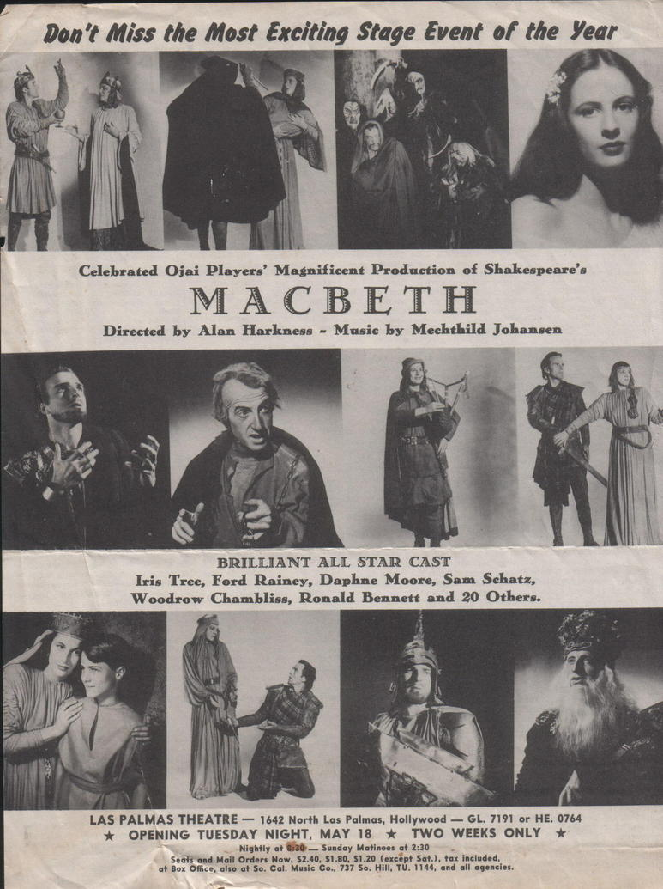
Macbeth program Read the clipping text (OCR)
Don't Miss the Most Exciting Stage Event of the Year Celebrated Ojai Players' Magnificent Production of Shakespeare's MACBETH Directed by Alan Harkness - Music by Mechthild Johansen BRILLIANT ALL STAR CAST leis Tree, Ford Rainey, Daphne Moore, Sam Schatz, Woodrow Chambliss, Ronald Bennett and 20 Others. LAS PALMAS THEATRE - 1642 North Las Palmas, Hollywood - GL. 7191 or HE. 0764 * OPENING TUESDAY NIGHT, MAY 18 * TwO WEEKS ONLY * Nightlyat6:30 - Sunday Motinees at 2:30 Seats and Mail Orders Now, $2.40, $1.80, $1.20 (except Sat.), tax included, at Box Office, also at So. Cal. Music Co., 737 So. Hill, TU. 1144, and all agencies.
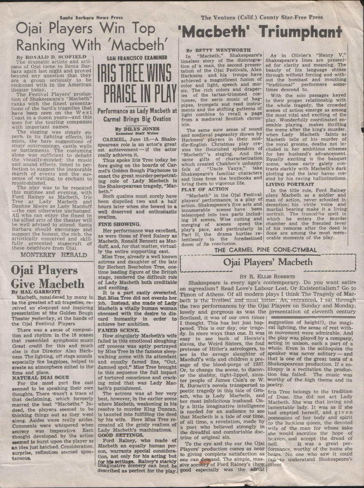
Macbeth reviews Read the clipping text (OCR)
Santa Barbara News Press Ojai Players Win Top The Ventura (Calif.) County Star-Free Press 'Macbeth' Triumphant Ranking With 'Macbeth' By BRTTY WENTWORTH By RONALD D. SCOFIELD "Macbeth," Shakespeare's Olivier's "Henry SAN FRANCISCO EXAMINER The dramatic artists and arti In timeless story of the disintegra Sharespearesnes arepresents sans o Oiai came to Santa Bar-| Darn asansast Bird and beyond any question that they are serious v to De So IRIS TREEWINS tion of a man, the second presen ed for cisrity and meaning. the tation of the Ojai Festivals, of his language shines Harkness and his d with achieved a magnificent fusion of out the bombast and mouthing rockonedwith n the American The Festival Players' produc tion faShakesppares "Macheth" PRAISE IN PLAY ESSE color and light, speech and mu "tradition8 Derformers Chime and draper times descend cOs With the solo passages keyed tumes, bag to their proper relationship with Tanks went he minest present?. trumpets and reed instru- the whole tragedy, the tons of the hard's tragedies that Performance as Lady Macbeth at ments and the shifting patterns of Wes scenes of action emerge as among nastin a cozen vears-Booths goes for the touring companies Carmel Brings Big Ovation light combine a page the most vital and exciting of the medieval Scottish chrone Day wonder cooramnated en important names. icle. semble. playing makes thrilling BY DILYS JONES The same sure sense of sound the scene after the king's murder, The staging was simply su and medieval pageantry shown by when Lady Macbeth mists, the bare suggestions of CARMEL, June 15. -A Shake Harkness' players in their mid- Macbeth tells of his murder stony outcroppings castle walls spearean role is an actor's great die-Enelish Christmas play cre the royal grooms, deaths not in. Tho est achievement - it the actor the fourished splendors of cluded in her ambitious schemes alone was sufficient really achieves it. "Macbeth"'s staging. the for her husband's advancement The visua v.minders the musie and sounds offers Thus spoke Iris Tree today be same gifts characterization Equally exciting is thebanose fore going on the boards of Car- which created Chekhov's unhappy scene, whose early asiety tection to succostha nevorsae mel's Golden Bough Playhouse to folk uncle vanya, take rests starkly with macoein's march otevenis.on enact the great murder perpetrat- Shakespeare's familiar characters plotting and the later havoc cre mense or watting, to enchant music-minded. of Lady Macbeth in and lines from the textbooks he Day was to he renasien the Shakespearean tragedy, Bac bring them to vigorous life. ated by his raving hallucinations beth." PLAY OF ACTION LIVING PORTRAIT this matinee and evening. with In the title role, Ford Rainey Ford Rainey Macbeth, Iris Such qualms must surely have "Macbeth" in the Ojal Festival blays Macbeth as a so dier and Tree as. Bady Macbeth and Daphne Moore as Lady Macduff been dispelled two and a half players pertormance, is a play of man of action, never schooled in the cast otherwise unchanged. hours later when she bowed to a action. Shakespeare's five acts and deception; his well deserved and enthusiastic innumerable scenes have been martial bearing make it a living All who can enjov the finest in ovation, telescoped into two parts includ- portrait. The trancelike spell in the allied arts of the theater will ing 16 be well advised to attend. Santa Wise cutting and which he enters the FINE SHOWING, murder merging scenes speed the chamber and the frenzied tever Barbara should encourage and support the honest. the rich. the Her performance was excellent, play's pace, and particularly his romorse after the deeds as were those of Ford Rainey as Part I, the drama hurtles re done are among the moss meth artistically conceived and skill. Macbeth, Ronald Bennett as Mac- lentlessly, the toredestined pa rosan тол these neighbors from Ojai. Ammo its concitision duft, and, for that matter, virtual- ly the entire supporting cast. THE CARMEL PINE CONE.CYMBAL MONTEREY HERALD Miss Tree, already a well known Ojai Players actress and daughter of the late Ojai Players' Macbeth Sir Herbert Beerbohm Tree, one time leading figure of the British Give Macbeth stage, rendered the difficult role BY R. ELLIS ROBERTS of Lady Macbeth both creditable and exciting, Shakespeare is every age's contemporary. Do you want satire By HAL GARRIVIT on surrealism? Read Love's Labour Lost. Or Existentialism? Go to part easily overacted. Timon of Athens. Of all modern plays I think The Tragedy of Mac- Macbeth, considered by many to But Mfiss free ald not overdo bet beth is the livellest and most bitter. As, entranced, I sat through be the greatest of all tragedies, re- job, Instead, she made of Lady ceived an' eloquent and Inspiring Macbeth a vitally human woman the two performances by the Ojai Players on Sunday and Monday, presentation at the Golden Bough obsessed with the desire to dis lovely and gorgeous as was the presentation of eleventh century Theater yesterday, at the hands of card the Ojal Festivul Players. humanity in order to Scotland, it was of our own times | achieve her ambition. I thought. This has but just hap- suggestion of height!), the magi- There was a sense of compos!- FAMED SCENE. pened. This is our day, our trage. cal lighting, the sense of rest with- tion and rhythm in the 16 scenes How singularly Macbeth's wife dy. In more ways than. It was in movement were admirable. And resembled symphonic music falled in this emotional sloughing easy back of Hecate's the play was played by a company, Great credit for this and much off process was aptly portrayed slaves, the Weird Sisters, the foul acting in unison, each a part of a else is due Director Alan Hark- by Miss Tree in the famous sleep- pretense of Hitler's astrologers, to whole. Even in the soliloquies the ness. The lighting, off stage sounds walking scene with its attendant see in the savage siguanter of speaker was never solitary - and especially the bagpipes, helped to and equally famed line, Macduff's wife and children a pre. that is one of the great tests of a creste an atmosphere suited to the * Miss Tree brought sage of the blood-purge of 1937. Shakespearean production. If a so- time and place. to this sequence the full impact| Or, to change the scene, to discov- liloquy is a recitation the produc- NATURAL DIALOGUE of tortured consclence and crack- er the shabby, tight-lipped, sinis- For the most part the ter people of James Cain's or. I The music was W. worthy of the high theme and its castIng mind that was Lady Mac- R. Burnett's novels transported to poetry. seemed to be speaking their own beth's punishment. thoughts. There wasn't a trace of The actress was at her very poetic tragedy in this tale of Gru- Iris Tree belongs to the tradition that declaiming, ach, who is Lady Macheth, and of Duse. Sha did not act Lady wich formerly best, however, in the carter sone her most infelicitous husband. marred the best "Macbeths." In- where Macbeth, weakening in his • On- Macbeth. She was that loving and deed, the players seemed to be resolve to murder King Duncan, ly a little imaginative intelligence lamentable lady. It was as if she thinking things out as they went Is taunted into fulfiling the deed is needed for an audiencourtime, had emptied herself, and given that Macbeth is a tale of our time, along. Asides were really asides. by his wife. Here Miss Tree re possession of her body and spirit Comments were whispered when created all the grisly realism of of all time, a revelation, made by to the luckless queen, the devoted secrecy WAS naperative Each Lady Macbeth's machinations. a poet who believed strongly in wife of the man for whose sake thought developed by the action GOOD SETTINGS. the dreadful and comfortable doc- she would sacrifice the hope of trine of original sin. seemed to burst upon the player as an idea just hatched. Consideration, Ford Rainey, who made of heaven and accept the dread Macbeth an equally human per- To the eye and the ear the Ojai hell. It was great per- surorise, relection scumedsoon- son, warrants special considera. Players' production comes as near formance, worthy of the name she tion, not only for his acting but to giving complete satisfaction as bears. No one who saw it could for his settings. Rainey's starkly one can demand. The simple, mas- fail to understand Imaginative scenery can best be sive scenery of Ford Rainey's (how Shakespeare'& intent described as perfect for the play. good especially was the
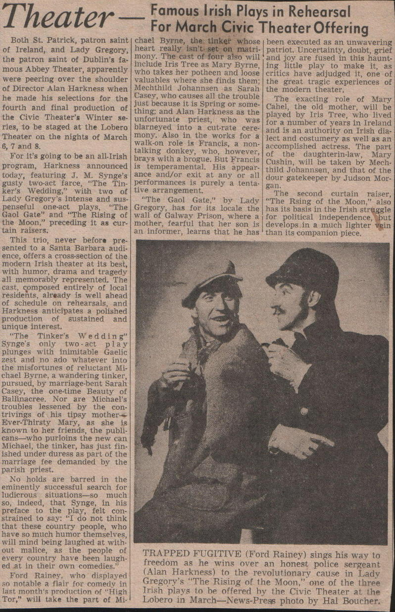
Review of program of Irish plays Read the clipping text (OCR)
Theater Famous Irish Plays in Rehearsal For March Civic Theater Offering Both St. Patrick, patron saint chael Byrne, the tinker whose been executed as an unwavering of. Ireland, and Lady Gregory heart really isn't set on matri- patriot. Uncertainty, doubt, grief the patron saint of Dublin's fa- mony. The cast of four also will and joy are fused in this haunt. include Iris Tree as Mary Byrne ing little play to make it. as mous Abbey Theater, apparently who takes her potheen and loose were peering over the shoulder critics have adjudged it, one of valuables where she finds them: the great tragic experiences of of Director Alan Harkness when Mechthild Johannsen as Sarah the modern theater. he made his selections for the Casey, who causes all the trouble just because it is Spring or some. The exacting role of Mary fourth and final production of thing; and Alan Harkness as the Cahel, the old mother, will be the Civic Theater's Winter se- played by Iris Tree, who lived unfortunate priest, who was for a number of years in Ireland res, to be staged at the Lobero blarneyed into a cut-rate cere and is an authority on Irish dia- Theater on the nights of March mony. Also in the works for a lect and costumery as well as an 6, 7 and 8. walk-on role is Francis, a non- accomplished actress. The part For it's going to be an all.Irish talking donkey, who, however, of the daughterin-law, Mary brays with a brogue. But Francis program, Harkness announced Cushin, will be taken by Mech- is temperamental. His appear thild Johannsen, and that of the today, featuring J. M. Synge's ance and/or exit at any or all dour gatekeeper by Judson Mor- gusty two-act farce, "The Tin- performances is purely a tenta gan. ker's Wedding," with two of tive arrangement. The second curtain raiser, Lady Gregory's intense and sus- The Gaol Gate." by Lady "The Rsing of the Moon," also penseful one-act plays, The Gregory, has for its locale the has its basis in the Irish struggle Gaol Gate" and The Rising of wall of Galway Prison, where a for political independence, but the Moon," preceding it as cur mother, fearful that her son is develops in a much lighter vein tain raisers. an informer, learns that he has than its companion piece. This trio, never before pre. sented to a Santa Barbara audi ence, offers a cross-section of the modern Irish theater at its best, with humor, drama and tragedy all memorably represented. The cast, composed entirely of local residents, already is well ahead of schedule on rehearsals, and Harkness anticipates a polished production of sustained and unique interest. "The Tinker's Wedding" Synge's only two-act play plunges with inimitable Gaelic zest and no ado whatever into the misfortunes of reluctant Mi- chael Byrne, a wandering tinker, pursued, by marriage-bent Sarah Casey, the one-time Beauty of Ballinacree. Nor are Michael's troubles lessened by the con- trivings of his tipsy mother- Ever-Thirsty Mary, as she is known to her friends, the publi cans. -who purloins the new can Michael, the tinker, has just fin- ished under duress as part of the marriage fee demanded by the parish priest. No holds are barred in the eminently successful search for ludicrous situations- so much so, indeed, that Synge, in his preface, to the play, felt con- strained to say: "I do not think that these country people, who have so much humor themselves, will mind being laughed at with out malice, as the people of every country have been laugh- ed at in their own comedies." Ford Rainey, who displayed so notable a flair for comedy in last month's production of "High Tor." will take the part of Mi. TRAPPED FUGITIVE (Ford Rainey) sings his way to freedom as he wins over an honest police sergeant (Alan Harkness) to the revolutionary cause in Lady Gregory's "The Rising of the Moon," one of the three Irish plays to be offered hy the Civic Theater at the Lobero in March- News-Press photo by Hal Boucher,
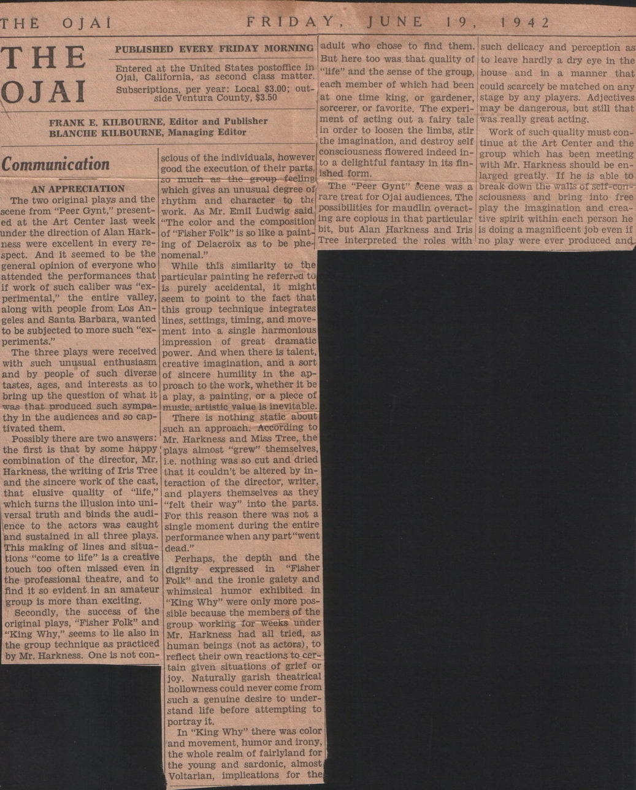
Review of Pier Gynt, 1942 Read the clipping text (OCR)
THE OJAI FRIDAY, JUNE 19, 1 9 4 2 THE OJAI PUBLISHED EVERY FRIDAY MORNING adult who chose to find them. such delicacy and perception as But here too was that quality of to leave hardly a dry eye in the Entered at the United States postoffice in Ojai. California, as second class matter. "life" and the sense of the group, house and in a manner that Subscriotions. per year: Local $3.00; out- each member of which had been could scarcely be matched on any side Ventura County, $3.50 at one time king, or gardener, stage by any players. Adjectives sorcerer, or favorite. The experi- may be dangerous, but still that FRANK E. KILBOURNE, Editor and Publisher BLANCHE KILBOURNE, Managing Editor ment of acting out a fairy tale was really great acting. in order to loosen the limbs, stir Work of such quality must con- the imagination, and destroy self tinue at the Art Center and the Communication scious of the individuals, however consciousness flowered indeed in- group which has been meeting good the execution of their parts, to a delightful fantasy in its fin- with Mr. Harkness should be en- ished form. AN APPRECIATION so much as the group feeling larged greatly. If he is able to which gives an unusual degree of The "Peer Gynt" Scene was a break down the walls of self-con- The two original plays and the rhythm and character to the rare treat for Ojai audiences. The sciousness and bring into free scene from "Peer Gynt," present- work. As Mr. Emil Ludwig said possibllities for maudlin overact- play the imagination and crea- ed at the Art Center last week «The color and the composition ing are copious in that particular tive spirit within each person he under the direction of Alan Hark- of "Fisher Folk" is so like a paint_ bit, but Alan Harkness and Iris is doing a magnificent job even if ness were excellent in every re- ing of Delacroix as to be phe. Tree interpreted the roles with no play were ever produced and spect. And it seemed to be the nomenal." general opinion of everyone who While this similarity to the attended the performances that particular painting he referred to if work of such caliber was "ex- is purely accidental, it might perimental," the entire valley, seem to point to the fact that along with people from Los An- this group technique integrates geles and Santa Barbara, wanted lines, settings, timing, and move- to be subjected to more such "ex- ment into a single harmonious periments." impression of great dramatic The three plays were received power. And when there is talent, with such unusual enthusiasm creative imagination, and a sort and by people of such diverse of sincere humility in the ap- tastes, ages, and interests as to proach to the work, whether it be bring up the question of what it a play, a painting, or a piece of was that produced such sympa- muste, artistic value is inevitable. thy in the audiences and so cap- There is nothing static about tivated them. such an approach. According to Possibly there are two answers: Mr. Harkness and Miss Tree, the the first is that by some happy! plays almost "grew" themselves, combination of the director, Mr. Le. nothing was so cut and dried Harkness, the writing of Iris Tree that it couldn't be altered by in- and the sincere work of the cast, teraction of the director, writer, that elusive quality of "life," and players themselves as they which turns the Illusion into uni- "felt their way" into the parts. versal truth and binds the audi- For this reason there was not a ence to the actors was caught single moment during the entire and sustained in all three plays. performance when any part "went This making of lines and situa- dead." tions "come to life" is a creative Perhaps, the depth and the touch too often missed even in dignity expressed in «Fisher the professional theatre, and to Folk" and the ironic gaiety and find It so evident, in an amateur whimsical humor exhibited in group is more than exciting. King Why" were only more pos- Secondly, the success of the sible because the members of the original plays, 'Fisher Folk" and group working for weeks under "King Why," seems to lie also in Mr. Harkness had all tried, as the group technique as practiced human beings (not as actors), to by Mr. Harkness. One is not con- reflect their own reactions to cer- tain given situations of grief or joy. Naturally garish theatrical hollowness could never come from such a genuine desire to under- stand life before attempting to portray it. In "King Why" there was color and movement, humor and irony, the whole realm of fairlyland for the young and sardonic, almost Voltarian, implications for the
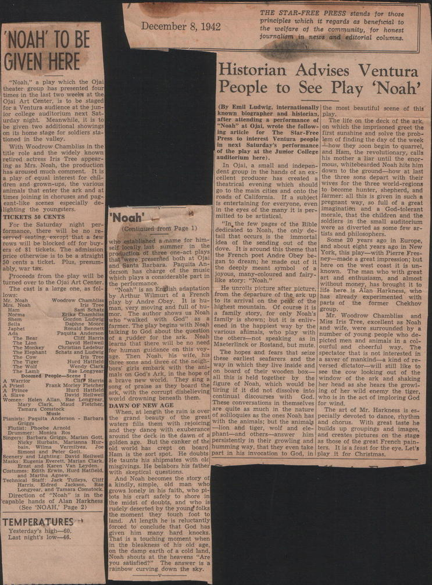
Review of Noah, 1942 Read the clipping text (OCR)
"NOAH' TO BE GIVEN HERE December 8, 1942 THE STAR-FREE PRESS stands for those principles which it regards as beneficial to the welfare of the community, for honest journalism in news and editorial columns. Historian Advises Ventura "Noah." a play which the Ojal theater group has presented four timeg in the last two weeks at the People to See Play 'Noah' Ojal Art Center, Is to be staged for a Ventura audience at the jun- (By Emil Ludwis, Internationally the most beautiful scene of this for college auditorium next Sat- Turday night. Meanwhile, it is to known biographer and historian, play. be given two additional showings after attending a performance of The life on the deck of the ark, "Noah" at Ojal, wrote the follow- on which the imprisoned greet the on its home stage for soldiers sta. ing article for tioned in the valley. The Star-Free first sunshine and solve the prob- Press to interest Ventura people lem of finding the day of the week With Woodrow Chambliss in the next Saturday's performance how they soon begin to quarrel, title role and the widely known of the play at the Jumior College and Ham, the revolutionary, calls retired actress iris Tree appear- ing as Mrs. Noah, the production auditorium here). Dis mother anar unt the enors has aroused much In Ojai, a small and indepen. -mous, whitebearded Noah hits him dent group in the hands of an ex- down to the ground- how at Jast a play of equal interest for chil- dren and grown-ups, the various cellent producer has created a the thrce sons depart with their animals that ark and at theatrical evening which should wives for the three worderotons times joining in choruses and pug- go to the main cities and onto the to become hunter, shepherd, eant-like scenes especially roads of California. de If a subject farmer: all this is given in such a Is entertaining for everyone, even pregnant way, so full of a great lighting the youngsters. in the eyes of the many it is per- imagination TICKETS 50 CENTS "Noah! and mitted to be artistical. morale, that the childron and the For the Saturday night per- (Contioned from Page 1) "In, the few pages of the Bible soldiers in the small auditorium were as diverted as some few ar- formance, there will be no re- tists and philosophers. gerved seating, except that a few dedicated to Noah, the only de- tail that occurs is the rows will be blocked off for buy- who established a name for him- lidea of Sin Some 20 years ago in Europe, ers of $1 tickets. The admission self locally last summer 10916ove. the sending out of the and about elkolovears acoreNow production of three one-act plays It is around this theme that York, this play- with Plete Fres price otherwise is to be a straight 50 cents a ticket. Plus, presum- that were presented both at Ofa! the French poet Andre and Santa Barbara. Obey be- neg--mado a great impression; but ably, war tax. Paquita An- zan to dream: he made out of ihere on the west coast It is un- Proceeds from the play will be derson has charge ot the music the deeply meant symbol known. The man who with great turned over to the Oja: Art Center. which plays a considerable part in joyous, many-coloured and fairy- art and enthusiasm, and almost like story; "Noah."* The cast 15 a large one, as lol- the performance. Noah" without money, has brought it to Dow: is an English adaptation He unrolls picture after picture, by Arthur life here is Wilmurt Woodrow Chambliss play by Andre Obey. of a French from the departure of the ark up has already Alan Harkness. tuna Tree It is hu- to its arrival on the peak of the parts experimented Sam Schaty man, very moving and full of hu highest mountain. Of course it is group. the ormer Chekhov Exlka Chambliss mor. The author shows us Noah a family story, for only Noah's Mr. Gordon Ludwig who "walked Daphne. Moore with God" Woodrow Chambliss and Ronald Bennett as a family is shown; but it is enily- Miss Iris Tree, excellent as Noah farmer. The play begins with Noah ened in the happlest way by the and wife, were surrounded by a The Bear talking to God about the question various ahimals, who play Clift Harris of a rudder. for the ark.. David Hellwel Noah the others- not speaking. with number of young people Henris that there will be no need Maeterlinck or Rostand, but mute. ourful and as in picted men and animals in a col- for human guidance on this voy- cheerful way. The age. Then Noah, three sons and three of the neigh- his wile. his these earliest The hopes and fears that seize spectator that is not interested in seafarers and the a sayer of mankind a kind of re- bors' girls embark with the ani- way in which they live inside and versed dictator will still like to mals on God's Ark, in the hope of on board of their wooden box see the cow looking the a brave new world. They sing a all this is held together by the window of the ark and shaking Frank Morley Fletche song of praise as they board the figure of Noah, which would be her head as she hears the growl- lark, with the corrupt disbelieving tiring it it did not dissolve into ing of her wild enemy the tiger, Women: Helen. Allan, world drowning beneath them. continual discourses with God. who is in the act of imploring God DAWN OF NEW AGE These conversations in themselves for wind. When, at length the rain is over guise as much in the nature The art of Mr. Harkness is es. Pianis ACESORT s Barbarr the srand beauty of the great of soliloquies as the ones Noah has pecially devoted to dance, rhythm waters fills them with rejoicing with the animals; but the animals and chorus. With great taste he Flutiat: and they dance with exuberance lion and tiger, wort and elc-bulds up groupings and images; Singers: Barbara Griggs. Marian Gott. around the deck in the dawn of a phant-and others--answer him and creates pictures on the stage Nicky Hurbain, Perianna golden age. bain. Wilma. Vermilyea, But the canker of the persistently in their growling and as those of the great French pain- old world has Ancho Poter Gott crept Ham is the sort spot. board humming way, that they even take ters. It is a feast for the eye. Let's pride sinhtings David hollwell He doubts part in his invocation Christmas. genin Everett, Marian Clark. and Karen Van Leyden. He taunts his shipmates with old play misgivings. He belabors his father Costumes: Saith Sewin. sard fatteld. with skeptical questions. nannican MCKO Clift And Noah becomes the story of a kindly, simple, old maDe WhO consycal, abasamara. comatooK grows Ionely in his faith, who pi- ison the lots his craft safely to shore in capable hands of Alan Harkness the midst of (See doubts, and who is "NOAH. Page 2) rudely deserted by the young folks the moment they touch foot to TEMPERATURES * land. At length he is reluctantly forced to conclude that God has Yesterday's high-60, him many hard knocks. Last night's low-46. That is a touching moment when in the pleaxness of his old age, the damp earth of a cold land, Noah shouts at the heavens "Are you satistied?" The answer is rainbow curving down the sky.
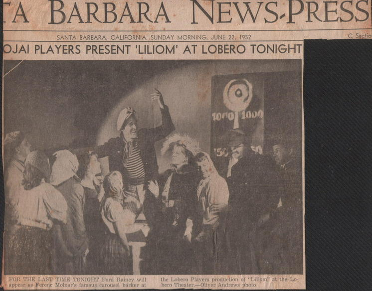
Performance of Liliom, 1952 Read the clipping text (OCR)
BARBARA NEWS-PRESS SANTA BARBARA, CALIFORNIA. SUNDAY MORNING, JUNE 22, 1952 OJAI PLAYERS PRESENT 'LILIOM' AT LOBERO TONIGHT 1010 2000 FOR THE LAST TIME
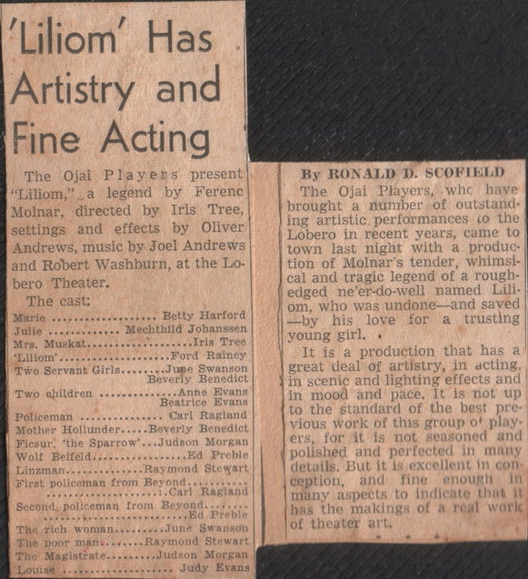
‘Liliom’ review Read the clipping text (OCR)
'Liliom' Has Artistry and Fine Acting The Ojai Players present "Liliom," a legend by Ferenc Molar, directed by Iris Tree, settings and effects by Oliver Andrews, music by Joel Andrews and Robert Washburn, at the Lo- bero Theater. The cast: Márie ....... Betty Harford Julie ........... Mechthild Johanssen Mrs. Muskat .....Iris Tree 'Lilfom'. ....Ford Rainey Two Servant Girls..... ..June Swanson Beverly Benedict Two children Man am.... Anne vans Beatrice Evans Policeman ............. Carl Ragland Mother Hollunder…...Beverly Benedict Fiesur. "the Sparrow' ...Judson Morgan Wolf Beifeld.. .......Ed Preble Linzman...........Raymond Steyart First policeman from Beyond.......... ............Carl Ragland Second: policeman from Beyond...... ..w.........Ed Preble The rich woman.... .....June. Swankon The poor man.. ..Raymond Stewart The Magistrate.. ...Judson Morgan Judy Evans By RONALD D. SCOFIELD The Ojai Players, whe have brought a number of outstand- ing artistic. performances co the Lobero in recent years, came to town last night with a produc tion of Molnar's tender, whimsi- cal and tragic legend of a rough- edged ne'er-do-well named Lili. om, who was undone and saved _by his love for a trusting young girl. It is a production that has a great deal of artistry, in acting. in scenic and lighting effects and in mood and pace. It is not up to the standard of the best pre- vious work of this group of play. ers. for it is not seasoned and polished and perfected in many details. But it is excellent in con ception, and fine enough in many aspects to indicate that it has the makings of a real work of theater art.
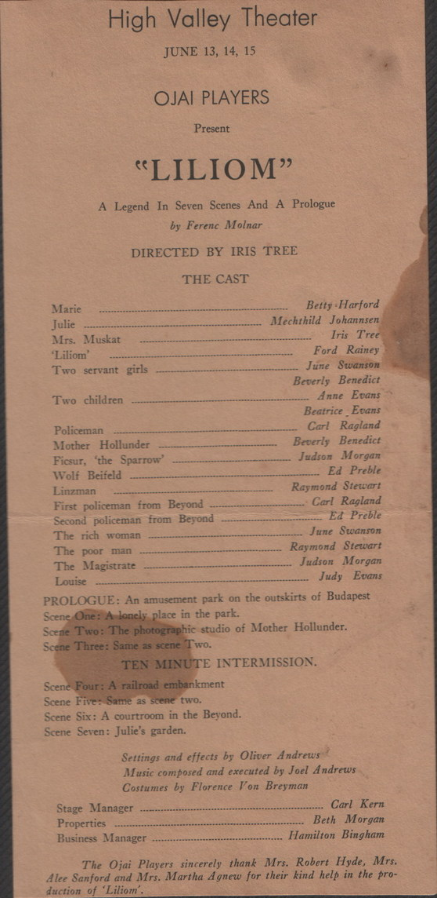
Lilliom cast list Read the clipping text (OCR)
High Valley Theater JUNE 13, 14, 15 OJAI PLAYERS Present "LILIOM" A Legend In Seven Scenes And A Prologue by Ferenc Molnar DIRECTED BY IRIS TREE THE CAST Marie Julie Mrs. Muskat 'Liliom Two servant girls Two children Policeman Mother Hollunder Ficsur, 'the Sparrow' Wolf Beifeld Linzman First policeman from Beyond Second policeman from Beyond The rich woman The poor man The Magistrate Louise ..... Betty Harford Mechthild Johannsen Iris Tree Ford Rainey June Swanson Beverly Benedict Anne Evans Beatrice Evans Carl Ragland Beverly Benedict Judson Morgan Ed Preble Raymond Stewart Carl Ragland Ed Preble June Swanson Raymond Stewart Judson Morgan Judy Evans PROLOGUE: An amusement park on the outskirts of Budapest Scene One: A lonely place in the park. Scene Two: The photographic studio of Mother Hollunder. Scene Three: Same as scene Two. TEN MINUTE INTERMISSION. Scene Four: A railroad embankment Scene Five: Same as scene two. Scene Six: A courtroom in the Beyond. Scene Seven: Julie's garden. Settings and effects by Oliver Andrews Music composed and executed by Joel Andrews Costumes by Florence Von Breyman Stage Manager Properties Business Manager Carl Kern Beth Morgan Hamilton Bingham The Ojai Players sincerely thank Mrs. Robert Hyde, Mrs. Alee Sanford and Mrs. Martha Agnew for their kind help in the pro- duction of 'Liliom
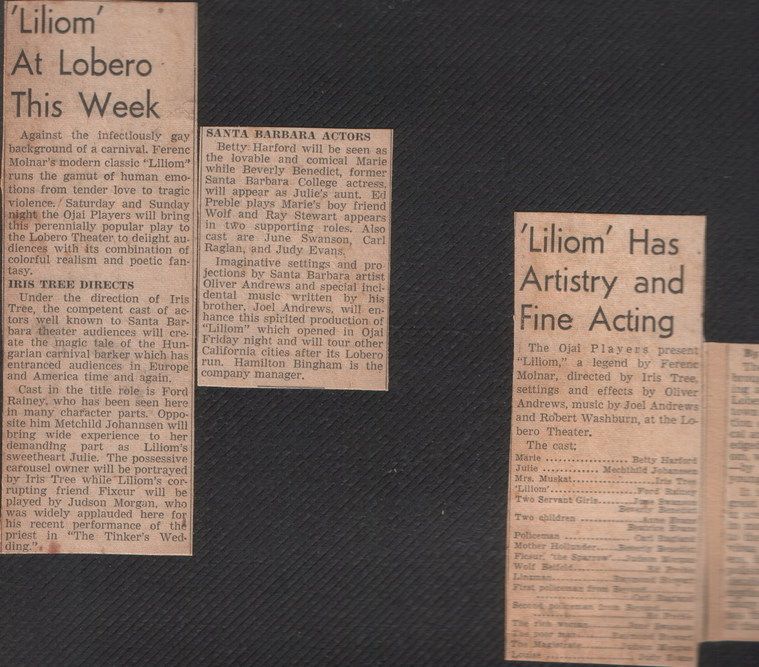
‘Liliom’ reviews Read the clipping text (OCR)
"Liliom At Lobero This Week Against the infectlously gay SANTA BARBARA ACTORS background of a carnival. Ferenc Betty. Harford will be seen as Molnar's modern classic "Lillom" the lovable and comical Marie runs the gamut of human emo- while Beverly Benedict, former tions from tender love to tragic Santa Barbara College violence. Saturday and Sunday will appear as Julle's aunt. Ed night the Ojai Players will bring Preble plays Marie's boy friend Wolf and Ray Stewart appears this perennially popular play to in two supporting roles. Also the Lobero Theater to delight au- diences with its combination of cast are June Swanson, Carl colorful realism and noetic fan. Raglan, and Judy Evans, Imaginative settings and pro lasy. IRIS TREE DIRECTS jections by Santa Barbara artist Oliver Andrews and special incl Under the direction of Iris dental music Tree, the competent cast of ac written by his tors well known to Santa Bar- brother, Joel Andrews, will en. hance this spirited production of bara theater audiences will cre. "Lillom" which opened in Ojai ate the magic tale of the Hun- Friday night and will tour other garian carnival barker which has California cities after its Lobero entranced audiences in Europe run. Hamilton Bingham Is the and America time and again. company manager. Cast in the title tole is Ford Rainey, who has been seen here in many character parts. Oppo. site him Metchild Johannsen will bring wide experience to her demanding Liliom's sweetheart Julie. The possessive carousel owner will be portrayed by Iris Tree while Liliom's cor. rupting friend Fixeur will be played by Judson Morgan, who was widely applauded here for his recent performance of the "The Tinker's Wed. 'Liliom' Has Artistry and Fine Acting The Ojai Players present "Liliom," a legend by Ferene Moinar, directed by Iris Tree, settings and effects by Oliver Andrews, music by Joel Andreas and Robert Washburn, at the Lo bero Theater. The cast; Julies.......... Mechisna
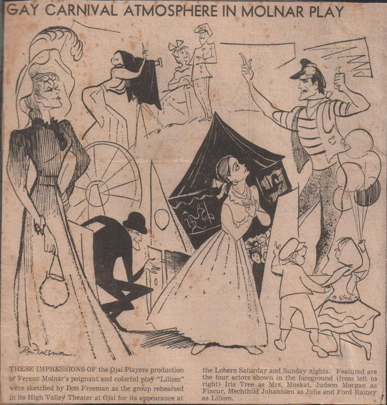
‘Liliom’ cartoon Read the clipping text (OCR)
GAY CARNIVAL ATMOSPHERE IN MOLNAR PLAY THESE IMPRESSIONS OF the Ojai Players production of Ferenc Molar's poignant and colorful play "Liliom" were sketched by Don Freeman as the group rehearsed in its High Valley Theater at Ojai for its appearance at the Lobero Saturday and Sunday nights. Featured are the four actors shown in the foreground (from left to right) Iris Tree as Mrs. Muskat, Judson Morgan as Fixeur, Mechthild Johannsen as Julie and Ford Rainey as biliom.
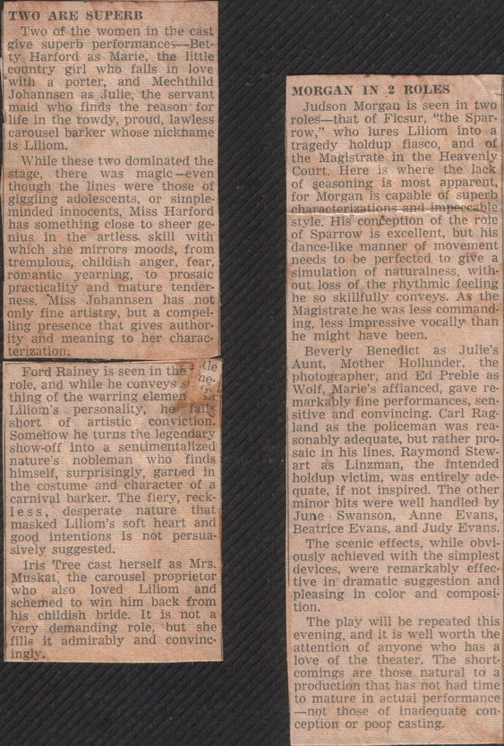
‘Liliom’ review Read the clipping text (OCR)
TWO ARE SUPERB Two of the women in the cast give superb performances- -Bet tv Harford as Marie. the jittle country girl who falls in love 'with a porter, and Mechthild Johannsen as Julie, the servant maid who finds the reason for Ilife in the rowdy, proud, lawless carousel barker whose nickhame is Liliom. While these two dominated the stage, there was magic -even though the lines were those of giggling adolescents, or simple. minded innocents. Miss Harford has something close to sheer ge nius in the artless skill with which she mirrors moods, from tremulous, childish anger, fear, romantic yearning, to prosaic practicality and mature tender- ness. Miss Johannsen has not only fine artistry, but a compel ling presence that gives author ity and meaning to her charac terization. Ford Rainey is seen in that idle role, and while he conveys st he thing of the warring elemen Liliom's personality, he fally short of artistic conviction. Somehow he turns the legendary show.off into a sentimentalized nature's nobleman who finds himself, surprisingly, garbed in the costume and character of a carnival barker. The fiery, reck- less desperate nature that masked Liliom's soft heart and good intentions is not persua sively suggested. Iris Tree cast herself as Mrs. Muskat the carousel proprietor who also loved Liliom and schemed to win him back from his childish bride. It is not a very demanding role, but she fills it admirably and convinc ingly. MORGAN IN 2 ROLES Judson Morgan is seen in two roles. that of Ficsur, "the Spar- row," who lures Liliom into a tragedy holdup fiasco, and of the Magistrate in the Heavenly Court. Here is where the lack of seasoning is most apparent, for Morgan is capable of superb characterizations and impeccable style. His conception of the rote of Sparrow is excellent, but his dance.like manner of movement needs to be perfected to give a simulation of naturalness, with out loss of the rhythmic feeling he so skillfully conveys. As the Magistrate he was less command- ing. less impressive vocally than he might have been. Beverly Benedict as Julie's Aunt, Mother Hollunder: the photographer, and Ed Preble as Wolf, Marie's affianced, gave re. markably fine performances, sen- sitive and convincing. Carl Rag- land as the policeman was rea- sonably adequate, but rather pro. saic in his lines. Raymond Stew. art as Linzman, the intended holdup victim, was entirely ade. quate, if not inspired. The other minor bits were well handled by June Swanson, Anne Evans, Beatrice Evans, and Judy Evans. The scenic effects, while obvi. ously achieved with the simplest devices, were remarkably effec- tive in dramatic suggestion and pleasing in color and composi tion. The play will be repeated this evening, and it is well worth the attention of anyone who has a love of the theater. The short comings are those natural to a production that has not had time to mature in actual performance -not those of inadequate con ception or poor casting.